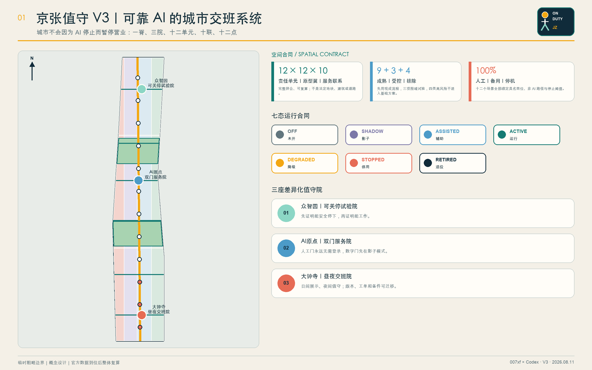
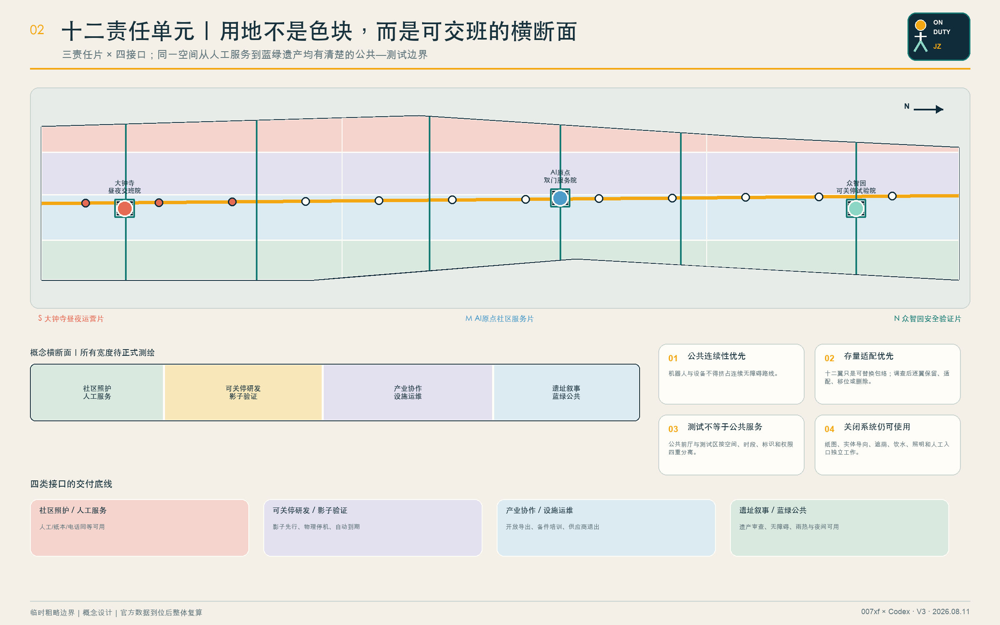
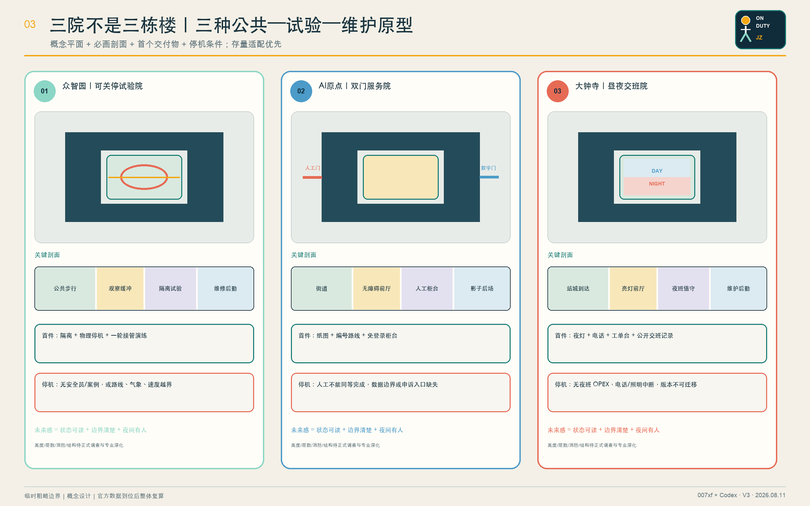
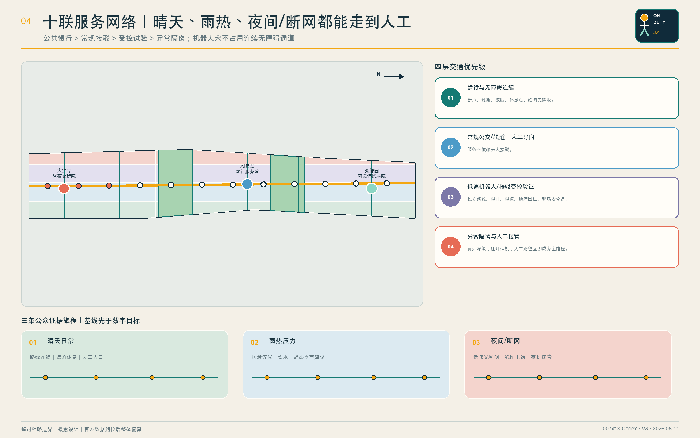
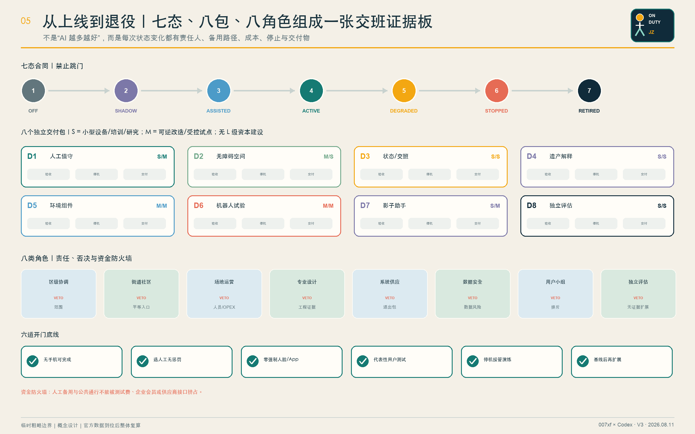
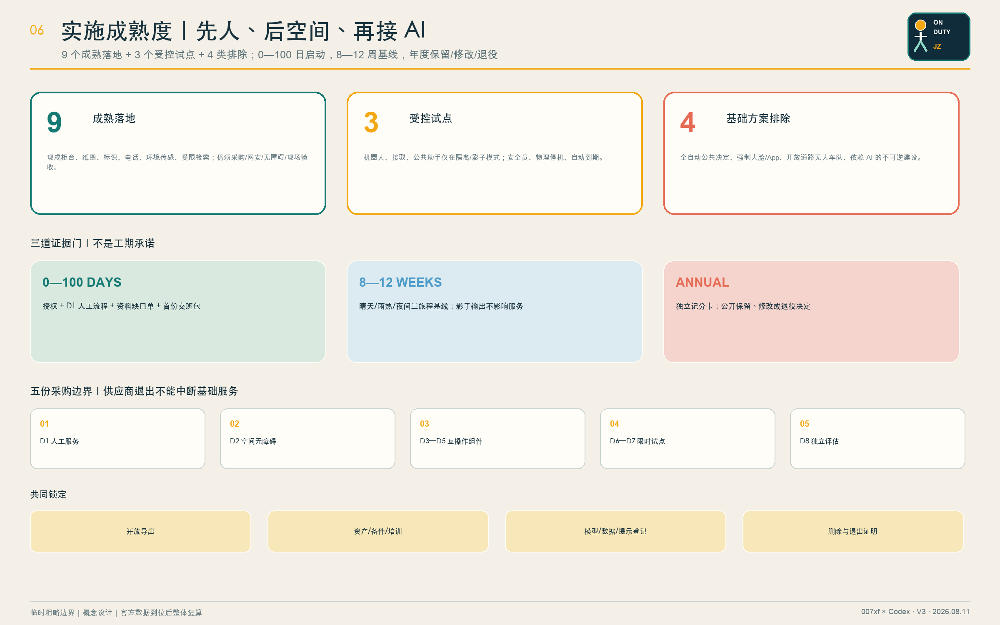
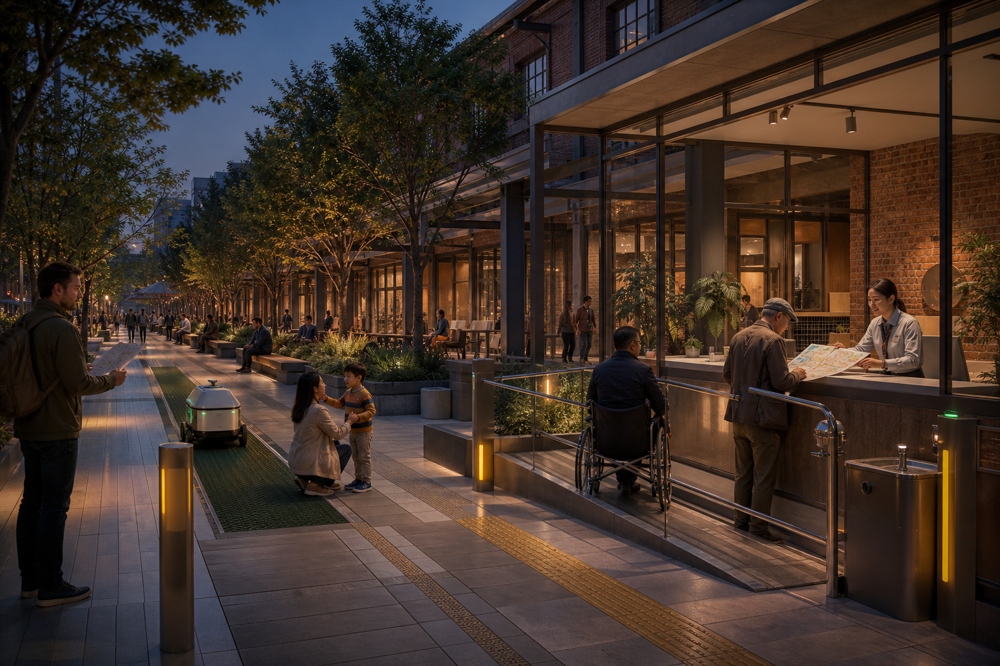

CENTENNIAL JING-ZHANG AI INNOVATION BELT · 007xf · V3
京张值守 V3 / ON DUTY JING-ZHANG
把可靠 AI 做成可看见、可接手、可退出的城市空间

核心命题
先定人，再定空间，最后接 AI。无具名值守不开服务；无法核验状态就停机；供应商退出不影响人工备用。
成果目录
总览地图三层范围重点区域用地分区交通慢行蓝绿公共空间建筑更新项目AI 场景核心指标任务覆盖自检状态来源假设
审计看板
11.41 km²临时总体 polygon
12责任单元
12三院原型翼
10服务联系
12场景节点
7运行状态
8独立交付包
8治理角色
8生态交班要素
8离线公共组件
5文化叙事站
5开发者转化门
4活动品牌
17.9931%概念绿地比例
0.2178%概念公共值守庭比例
100%人工值守
9成熟落地场景
3受控试点
六项值守表
- 01服务时段
- 02数据边界
- 03责任到人
- 04非数字替代
- 05停用阈值
- 06恢复维护
七态合同
OFF未开
SHADOW影子
ASSISTED辅助
ACTIVE运行
DEGRADED降级
STOPPED停用
RETIRED退役
六张证据图 + 一张空间氛围






证据边界
全部空间图使用仓库临时粗略边界。深圳、重庆只提供运营与公共空间方法，仓库任务和北京证据优先；不主张地块、文保控制、容积率、高度或拆除结论。